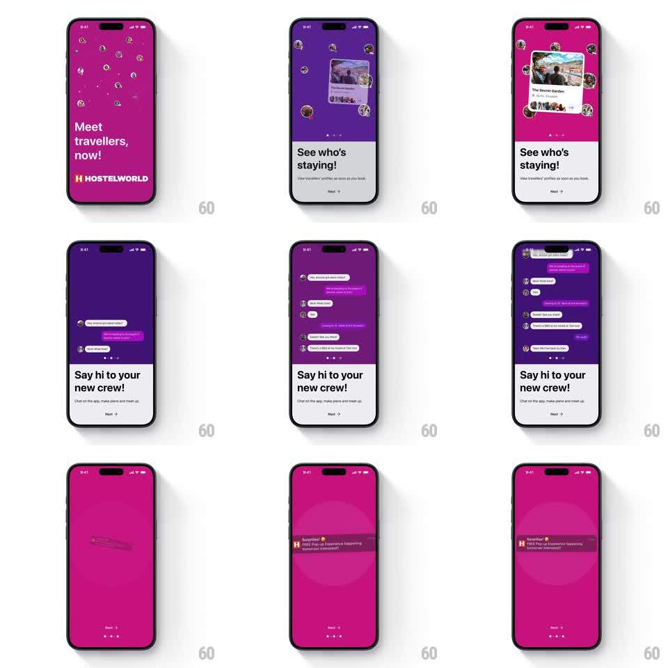

Media
Frame-by-frame

Rebuild this animation 1:1: Hostelworld's onboarding slideshow - value-prop slides with floating traveler avatars and cascading chat bubbles over the brand gradient, paged with staggered transitions.

Rebuild this animation 1:1: Hostelworld's onboarding slideshow - value-prop slides with floating traveler avatars and cascading chat bubbles over the brand gradient, paged with staggered transitions. ## Integration Integration: stack-agnostic spec - springs given as stiffness/damping, timed motions as duration + curve; map every value to your framework and animation library of choice. ## Scene Hostelworld onboarding, magenta-to-purple brand gradient: slide 1 "Meet travellers, now!" with the HOSTELWORLD wordmark and floating circular avatars; slide 2 "See who's staying!" with a hostel card (photo, name, rating, avatar stack) ringed by avatars; slide 3 "Say hi to your new crew!" with a cascading chat thread (grey incoming, purple outgoing bubbles). Bottom: page dots and a Next arrow. ## Motion spec Pattern: staggered slide transitions with floating avatars and cascading bubbles. - Slide 1: the wordmark and headline fade up (300ms); avatar bubbles pop in scattered across the upper half (scale 0 -> 1, spring ~450/16, 60ms stagger) and then drift gently (translate +/-6px, 3s loops, random phases). - Slide change (Next or swipe): the current slide's elements scatter-fade (translate outward 30px + fade, 250ms) as the gradient hue shifts (red-magenta -> purple over 400ms) and the new slide's elements stagger in. - Slide 2: the hostel card springs up from below (spring ~320/20), then the avatar ring pops in around it (50ms stagger, scale springs), then the headline and "Next". - Slide 3: chat bubbles cascade down the thread - each bubble slides in from its side (incoming from left, outgoing from right, 250ms ease-out) 180ms apart, with avatar dots preceding their bubbles; the "typing" gap between bubbles is part of the rhythm. - Page dots advance with a pill stretch (active dot width 8 -> 20px, 200ms). ## Calibration - Avatars are real circular photos with thin white rings - never initials. - The gradient is continuous across slides - it shifts hue, never hard-swaps. ## Reduced motion Slides crossfade (300ms); avatars and bubbles appear in place. ## Don't miss - The hostel card's avatar stack overlaps its bottom edge - it is part of the card, not the ring. - Chat bubbles keep iOS-style tails pointing at their avatars.